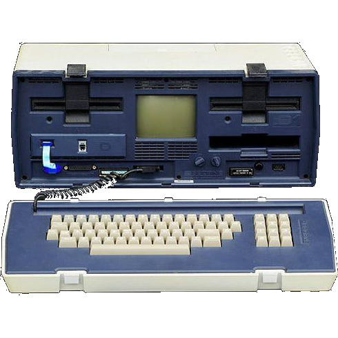
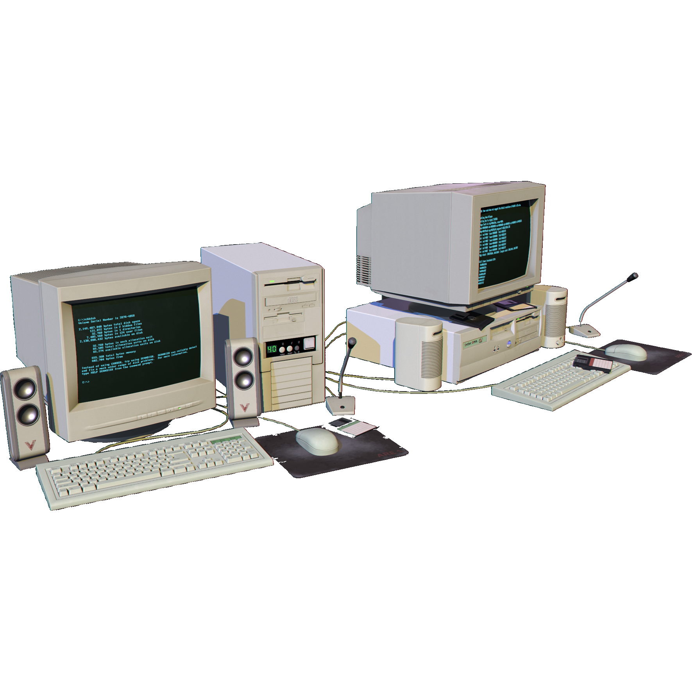
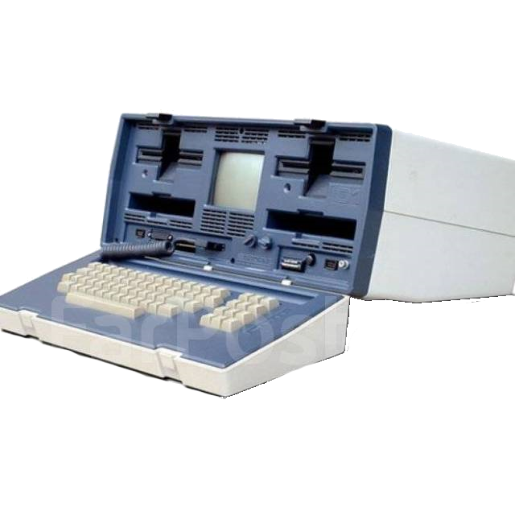

Работы по созданию будущего Интернета начались в 1962 году с опубликования Джозефом Ликлайдером работы «Галактическая сеть». В ней детально описана общая структура такой сети. Затем Пол Бэран из компании RAND Corporation выпустил работу «О Распределенных Коммуникационных Сетях», в которой освещались вопросы децентрализованной системы компьютеров, объединенных в одну сеть.
История Интернета

Равнозначность каждого из находящихся в ней устройств давала возможность обеспечить сохранность хранящейся на них информации и в том случае, если одно из устройств подвергалось уничтжения. Противостояние между СССР и США в Холодной войне создавало необходимость в системе, которая могла бы обеспечить возможность управления даже в случае нанесения ядерного удара. Прототип Интернета выглядел системой, которой вполне по силам в будущем справиться с этой задачей, и правительство США выделило средства из бюджета на развитие проекта.
По прошествии нескольких лет в Управлении перспективных исследовательских проектов Министерства обороны США (ARPA) начались работы по созданию локальной сети, которая могла бы объединить все компьютеры в компании между собой. Проект возглавил Ларри Робертс, к его реализации были привлечены несколько крупных учебных заведений США:
- Калифорнийский университет в Лос-Анджелесе.
- Стэнфордский исследовательский институт.
- Калифорнийский университет в Санта-Барбаре.
- Университет штата Юта.

Для обеспечения связи между данными заведениями проложили кабель, после чего группа во главе с Фрэнком Хартом занялась разработкой технологического решения для создания сети. К 1969 году исследователи смогли достичь значительного прогресса, между указанными учреждениями удалось создать, в целом, работоспособную сеть, обеспечивающую стабильную передачу данных. К его разработке присоединились многие исследователи по всем США. Активный рост позволил уже к 1971 году разработать первую программу, которая может оправлять и принимать email. Следующий этап развития сети ознаменовался окончанием в 1973 году работ по установке кабеля, протянувшегося через Атлантический океан и соединившего северную Америку с Европой. Так сеть стала вышла на международной уровень.
На протяжении 70-80-х годов основным назначением сети остались отправка и прием электронной почты, новостей, различных объявлений. Существенные недостаток ARPANET заключался в том, что она не могла обеспечить совместимость с другими компьютерными сетями, что сильно тормозило ее развитие. Необходимо было решить проблему взаимодействия различных сетей, работающих на собственных протоколах передачи данных. В этих целях разрабатываются унифицированные стандарты связи, такие, как IP, ICMP, TCP, UDP, Telnet, DNS, FTP.

Новые разработки позволили ARPANET перейти с протокола NCP на TCP/IP. Это произошло 1 января 1983 года. По настоящее время он используется для интеграции различных сетей в единую систему. В этот же период слово «Интернет» входит в общее употребление, как синоним слова «ARPANET».
В 1984 году усилиями Национального научного фонда США удалось интегрировать ряд локальных сетей в масштабную сеть NSFNet (англ. National Science Foundation Network), которая соединила несколько вузов. Она была способна передавать больший объем данных, что создавало ощутимые преимущества перед ARPANET.